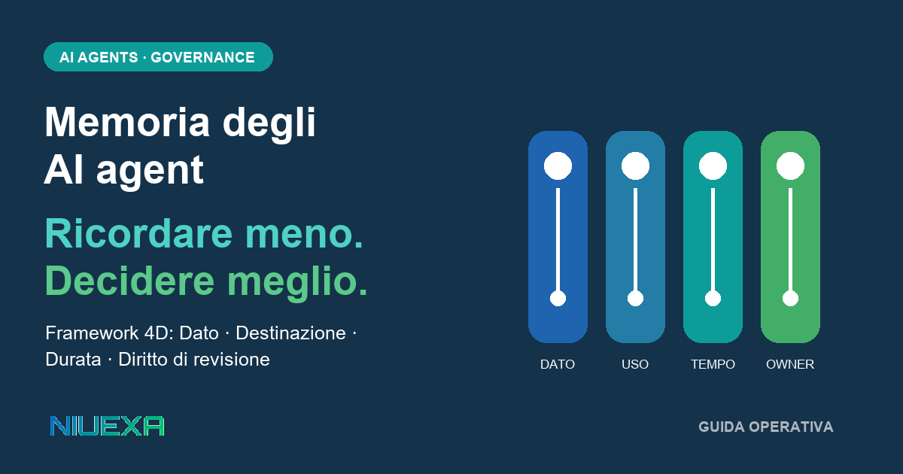

Risposta rapida: come si progetta la memoria di un AI agent?
Si parte dalla decisione che il sistema deve supportare, non dalla quantità di contesto disponibile. Per ogni informazione persistente si definiscono quattro dimensioni: Dato, Destinazione, Durata e Diritto di revisione. Se fonte, uso consentito, scadenza o owner non sono chiari, quel dato non dovrebbe guidare un’azione automatica.
La memoria non è un archivio neutrale: influenza la prossima decisione
Un assistente che dimentica una preferenza può creare attrito. Un AI agent che usa una preferenza vecchia per aggiornare un ordine, qualificare un’opportunità o preparare un’offerta può modificare il processo. La differenza non sta nel modello, ma nell’effetto operativo del contesto recuperato.
Il rischio cresce quando note, inferenze, policy e dati approvati finiscono nello stesso contenitore. Il recupero semantico può trovare una frase plausibile senza dimostrare che sia ancora valida, autorizzata o pertinente. La domanda corretta non è quindi “l’agent ricorda?”, ma “questo ricordo ha ancora il diritto di influenzare questa azione?”.
Il NIST AI Risk Management Framework collega governance, documentazione, responsabilità e monitoraggio all’intero ciclo di vita del sistema. Non prescrive il framework 4D, che è una guida Niuexa, ma sostiene un principio compatibile: il rischio AI va gestito con processi continui e ruoli espliciti, non con una regola generica affidata al prompt.
Quando la memoria contiene dati personali, entrano inoltre in gioco obblighi che dipendono da finalità, base giuridica e contesto. Il GDPR include principi come minimizzazione, esattezza e limitazione della conservazione, oltre ai diritti applicabili dell’interessato. Questa guida non sostituisce una valutazione legale: mostra come tradurre il bisogno di controllo in campi e decisioni operative.
Quattro memorie da non confondere
Prima di scegliere database vettoriale, CRM o archivio documentale, è utile separare il ciclo di vita dell’informazione. In un workflow aziendale convivono almeno quattro categorie:
| Tipo | Uso tipico | Evento di chiusura |
|---|---|---|
| Sessione | Completare la richiesta corrente | Fine dell’interazione o del task |
| Caso | Gestire ticket, pratica o opportunità aperta | Esito verificato o annullamento |
| Relazione | Preferenze confermate e storico rilevante | Revoca, aggiornamento o scadenza definita |
| Organizzazione | Policy, procedure, listini e conoscenza condivisa | Nuova versione, ritiro o revisione periodica |
La memoria di sessione dovrebbe spesso svanire. La memoria del caso deve chiudersi con il lavoro. Quella di relazione richiede un perimetro e un meccanismo di aggiornamento. La memoria organizzativa deve rimandare a una fonte versionata e a un proprietario. Un’unica retention o un unico livello di accesso per tutte e quattro produce conflitti inevitabili.
Le 4D: Dato, Destinazione, Durata, Diritto di revisione
1. Dato: che cosa può diventare memoria?
Una preferenza esplicita non equivale a un’ipotesi del commerciale. Un indirizzo confermato non equivale a quello estratto da una firma. Una policy approvata non equivale alla bozza discussa in chat. Il dato deve portare con sé fonte, timestamp, livello di affidabilità e, quando utile, collegamento all’evidenza originale.
Questo controllo protegge anche l’integrità del sistema. OWASP descrive i rischi di dati non verificati o manipolati nei sistemi LLM e raccomanda di tracciare origini e trasformazioni. La memoria applicativa non coincide con i dati di addestramento, ma la lezione operativa resta utile: provenienza e validazione non possono essere ricostruite dopo che il contenuto ha già influenzato un’azione.
2. Destinazione: dove può influenzare il lavoro?
Un dato può essere corretto e comunque fuori contesto. La lingua preferita può aiutare la preparazione di un’email, ma non autorizza uno sconto. Lo storico dei ticket può supportare il servizio clienti, ma non deve essere automaticamente disponibile a un workflow marketing. La destinazione specifica sistema, ruolo, workflow e tipo di decisione consentiti.
È una forma di minimo privilegio applicata non solo all’accesso, ma all’influenza. Il fatto che un agent possa leggere un dato non implica che possa usarlo per ogni azione.
3. Durata: quando il dato smette di essere attivo?
Molte memorie problematiche non sono false: sono scadute. Un referente cambia, un’eccezione termina, un listino viene sostituito. Serve una data oppure un evento di chiusura: fine ticket, nuova versione della policy, revisione dell’opportunità, rinnovo del contratto. Il dato può restare archiviato per finalità legittime senza restare attivo nel contesto dell’agent.
4. Diritto di revisione: chi può correggere, sospendere o cancellare?
Una memoria senza proprietario è difficile da contestare. Se due fonti confliggono, qualcuno deve stabilire quale prevale. Se un’informazione viene corretta, la modifica deve raggiungere indici, cache e sistemi che alimentano l’agent. Il diritto di revisione definisce owner, approvatore, procedura e tempo atteso di propagazione.
Il registro minimo della memoria operativa
Una PMI può iniziare con una tabella prima di introdurre un’infrastruttura sofisticata. Ogni classe di memoria dovrebbe avere almeno questi campi:
- contenuto o schema: che cosa viene conservato;
- fonte ed evidenza: da quale sistema o persona proviene;
- uso consentito: workflow, ruolo e decisione;
- validità: data o evento di scadenza;
- owner: chi approva e risolve i conflitti;
- azione di revisione: come correggere, disattivare o cancellare;
- stato: proposto, confermato, sospeso, scaduto o revocato.
Il valore del registro non è documentare tutto. È rendere visibile la regola prima che il dato entri nel contesto operativo. L’agent dovrebbe recuperare solo record attivi e compatibili con il workflow corrente, conservando l’identificativo delle fonti usate per permettere una verifica successiva.
Esempio: follow-up commerciale
Un agent che prepara il follow-up dopo una riunione può usare la lingua preferita, il problema esplicitamente dichiarato e il prossimo passo concordato. Non dovrebbe promuovere a memoria permanente una battuta sul budget, una richiesta non confermata o una valutazione interna sulla probabilità di chiusura.
Applicando le 4D: il Dato include solo impegni e preferenze confermate; la Destinazione è la bozza di follow-up e l’aggiornamento dell’opportunità; la Durata termina alla chiusura o alla riunione successiva; il Diritto di revisione appartiene all’account owner. L’agent non perde contesto: evita di trasformare il passato in una regola permanente.
Un pilota in sei passaggi e quattro test obbligatori
- Scegli una decisione. Non partire dalla memoria disponibile, ma dall’azione che deve migliorare.
- Separa le quattro categorie. Sessione, caso, relazione e organizzazione non condividono automaticamente regole.
- Compila il registro 4D. Nessun campo critico deve restare implicito.
- Implementa i filtri. Il recupero deve rispettare stato, destinazione, validità e permessi prima del ranking semantico.
- Mostra le fonti. Chi revisiona l’output deve poter vedere quali memorie hanno influenzato la proposta.
- Misura gli errori. Registra memoria scaduta usata, conflitti, correzioni non propagate e azioni bloccate.
Prima dell’automazione, esegui almeno quattro prove: un dato sbagliato, un dato scaduto, due fonti in conflitto e una richiesta di correzione. Il sistema deve sospendere o chiedere conferma, non scegliere silenziosamente il frammento più simile.
Le metriche utili sono operative: percentuale di output con fonti tracciate, memorie scadute intercettate, tempo di propagazione delle correzioni, conflitti aperti, azioni bloccate per dati insufficienti e rilavorazione attribuibile a contesto errato. Le soglie vanno definite sul workflow reale: non esiste un benchmark universale che garantisca affidabilità.
Fonti e perimetro
La guida collega il framework Niuexa 4D ai principi di governance continua, documentazione e responsabilità del NIST AI Risk Management Framework Core. Per provenienza e integrità dei dati richiama OWASP LLM04:2025. I riferimenti a minimizzazione, esattezza e limitazione della conservazione rimandano alla sintesi ufficiale sui principi fondamentali del trattamento del Garante per la protezione dei dati personali. Il framework 4D, il registro e il pilota sono guida operativa Niuexa; non costituiscono parere legale, valutazione privacy o garanzia di prestazione.
FAQ sulla memoria degli AI agent
Che cosa significa memoria per un AI agent?
È l’insieme di informazioni che il sistema può recuperare e usare oltre il singolo passaggio, dalla sessione corrente fino a dati di caso, relazione e conoscenza organizzativa.
Quali sono le 4D della memoria operativa?
Dato, Destinazione, Durata e Diritto di revisione. Le quattro dimensioni chiariscono che cosa conservare, dove usarlo, quando disattivarlo e chi può correggerlo o cancellarlo.
Perché un AI agent non dovrebbe ricordare tutto?
Perché informazioni non verificate, fuori contesto o scadute possono influenzare nuove azioni. Più memoria senza regole aumenta rumore, conflitti, esposizione e difficoltà di audit.
Come si gestisce la scadenza di una memoria?
Con una data di scadenza oppure un evento di chiusura, come la fine di un ticket, l’aggiornamento di un contratto o la revisione di una policy. Conservare un dato non significa mantenerlo attivo per sempre.
Da dove può partire una PMI?
Da un solo workflow, un registro minimo delle memorie e test su errore, scadenza, conflitto e correzione prima di consentire azioni automatiche.